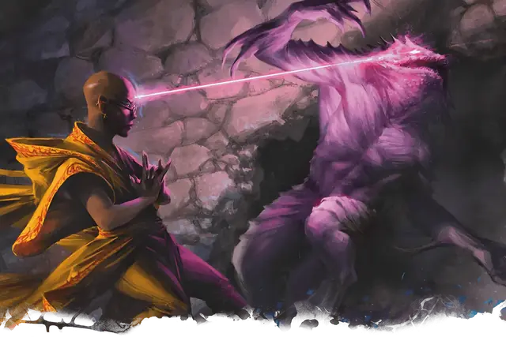

Расщепление разума
Mind Sliver
Заговор, Очарование

Время сотворения Действие
Дистанция 60 футов
Компоненты В
Длительность 1 раунд
Классы Волшебник, Колдун, Чародей
Подклассы Аберрантное чародейство (Чародей)
Вы пытаетесь расщепить разум существа, видимого вами в пределах дистанции. Цель должна преуспеть в спасброске Интеллекта, иначе получит 1к6 Психического урона и вычтет 1к4 из результата своего следующего спасброска, если совершит его до конца вашего следующего хода.
Усиление заговора. Урон увеличивается на 1к6, когда вы достигаете 5-го (2к6), 11-го (3к6) и 17-го (4к6) уровней.